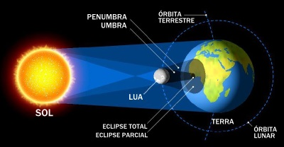
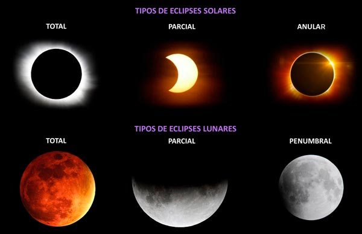

Um eclipse resulta da ocultação temporária, total ou parcial, de um astro pela interposição de outro objeto celeste entre este e o observador (como é o caso do eclipse do sol), ou pela entrada desse objeto celeste na sombra de outro (como é o caso do eclipse da Lua).
Durante o eclipse solar, duas áreas bem definidas são projetadas na superfície terrestre: a umbra e a penumbra. Confira o modelo esquemático a seguir:
A área umbral, ou seja, a área na qual a umbra se apresenta, é onde se manifesta o eclipse de forma total, onde fica totalmente escuro durante o eclipse. Já a área penumbral é aquela onde o eclipse ocorre apenas parcialmente, com uma breve sombra.
Devido as variações da distância da Terra ao Sol (do periélio ao afélio) e da Lua à Terra (do perigeu ao apogeu), pode ocorrer uma pequena diferença de diâmetro aparente de ambos os astros. Assim, dependendo dessa distância, não se chega a formar uma sombra por completo, mas apenas um “ponto preto”, que seria a Lua, em menor tamanho aparente, passando em frente ao Sol diante de sua visão na Terra
Afélio é o ponto da órbita de um astro em que sua distância em relação ao Sol é máxima. Periélio é o ponto mais próximo de um astro em relação ao Sol. No Apogeu a Lua está no ponto mais distante de sua trajetória programa de afiliados ao redor da Terra, e no Perigeu a Lua está o mais próximo dessa trajetória, que é elíptica.
Portanto, quando a Lua está perto da Terra e a Terra está longe do Sol, forma-se uma sombra completa, e quando a Lua está mais longe da Terra, forma-se uma sombra incompleta. Desse modo, classifica-se os eclipses solares em:
Eclipse solar total: quando toda a luz do sol é ocultada pela Lua
Eclipse solar parcial: quando apenas parte da luminosidade solar é ocultada pelo disco lunar.
Eclipse anular: quando o tamanho da Lua não é o suficiente para encobrir toda a área do sol, formando um “anel” em volta do satélite natural da Terra.
Eclipse híbrido: quando o eclipse é total em alguns pontos de visão e anelar em outros, em virtude do grau de inclinação da órbita lunar.
Observar o Sol é muito interessante e ao mesmo tempo exige cuidados. Várias medidas de segurança devem ser respeitadas para que estas observações não prejudiquem a visão. Observar diretamente o Sol sem o equipamento correto pode implicar em danos irreversíveis aos olhos. As células responsáveis pela visão quando expostas à radiação ultravioleta presente na luz solar durante período prolongado podem eventualmente sofrer queimaduras ou até mesmo pararem de funcionar durante um período de tempo levando em casos extremos à cegueira permanente.
Para garantir a segurança e o conforto necessários à observação, são necessários filtros específicos que barram a parte nociva da luz incidente.